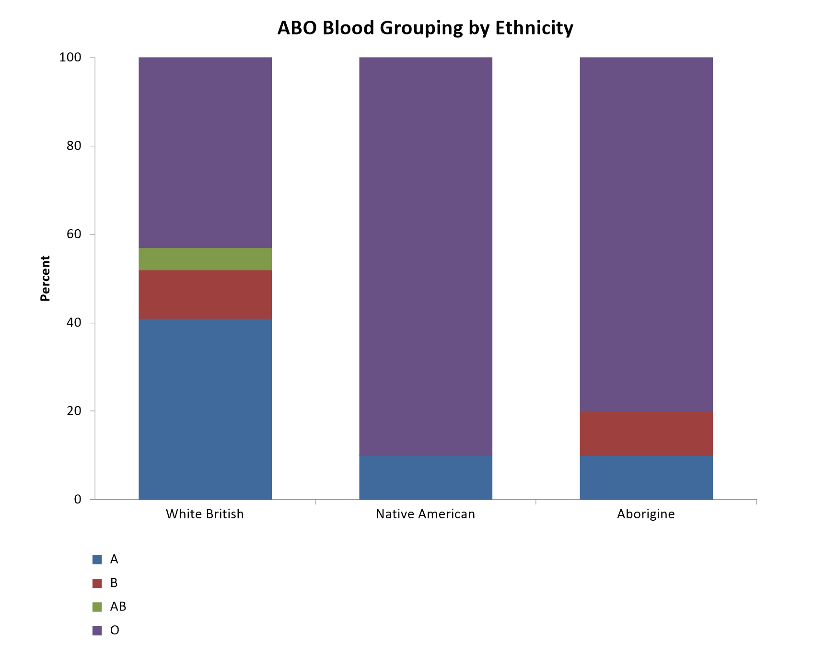

Menu location: Graphics_Bar or Column.
A bar plot gives a simple comparison of counts or summaries of measurements reflected as the relative lengths of a group of "bars", drawn either vertically or horizontally.
Where a group of measures are considered, for example blood pressure and cholesterol, in five ethnic groups of patients, then the primary measurement bars can be moved together in the groups.
You can choose to show groupings side by side or as a stack of bars on top of one another. The stack can also be made "100%" where you want to show the relative percentage make up of subgroups in a group, which is equivalent to a pie chart. In the example below the ABO blood group distribution is shown for three ethnic groups using this function:-

Example
Test workbook (Graphics worksheet: Blood Group, White British, Native American, Aborigine).
The chart above shows the ABO blood group distribution of three ethnic groups. The column marked "Blood Group" holds the bar labels A, B, AB and O, and the columns marked "White British", "Native American" and "Aborigine" hold the proportion of each group that is in each blood group (illustrative figures).
To draw it in StatsDirect open the test workbook using the file open function of the file menu. Then select Bar or Column (Value) from the Graphics menu. Select the columns marked "White British", "Native American" and "Aborigine" when prompted for the bar values, and the column marked "Blood Group" when prompted for the bar labels. StatsDirect then shows the chart options: choose 100% stacked as the type of plot, and type a title and a Y axis title if you want them. The chart above is titled "ABO Blood Grouping by Ethnicity" with the Y axis titled "Percent"; otherwise the chart is titled "Bar chart", and a plot of a single column of values names its Y axis after that column.
A clustered plot, the default type, draws the three groups' bars side by side at each blood group, with the columns' titles in a legend below the chart. A stacked plot turns the table round: one stack of bars for each column of values, with a segment for each bar label, so that the height of a stack is the total of its column. A 100% stacked plot scales each stack to the total of its column (missing values left out), so that its segments are percentages of that total.
For this example the segments of the 100% stacked plot are:
White British: A 41%, B 11%, AB 5%, O 43%
Native American: A 10%, B 0%, AB 0%, O 90%
Aborigine: A 10%, B 10%, AB 0%, O 80%
Blood group O is by far the commonest in the two indigenous groups, in which groups B and AB are rare or absent, whereas the White British group is split almost evenly between blood groups A and O.
Bar or Column (Frequency) draws the same kind of plot from raw categorical data: it counts the observations in each category of the column you select (with more than one column, it plots the proportion of each column's observations in each category). For example, select the column marked "Sex" in the Other worksheet of the test workbook: the two bars show its counts, F 4, M 8.
This R code reproduces the illustration above. It needs no packages and was checked with R 4.6.1. Paste it into R, or save it as a script and run it.
# Bar plot: the StatsDirect help illustration (the ABO blood group distribution of
# three ethnic groups; the test workbook's Graphics worksheet columns Blood Group,
# White British, Native American and Aborigine) in R
group <- c("A", "B", "AB", "O")
white_british <- c(0.41, 0.11, 0.05, 0.43)
native_american <- c(0.10, 0.00, 0.00, 0.90)
aborigine <- c(0.10, 0.10, 0.00, 0.80)
# One row for each worksheet column of values, one column for each bar label:
# barplot() draws a matrix as one group of bars per column, labelled by the column
# names, side by side when beside = TRUE and otherwise stacked.
values <- rbind("White British" = white_british, "Native American" = native_american,
"Aborigine" = aborigine)
colnames(values) <- group
shade <- c("steelblue", "firebrick", "olivedrab", "slateblue")
op <- par(mar = c(7, 4, 3, 1))
bottom_legend <- function(labels, fill) {
legend("bottom", legend = labels, fill = fill, horiz = TRUE, bty = "n",
inset = c(0, -0.2), xpd = TRUE)
}
# Clustered (StatsDirect's default type of plot): a bar for each column of values at
# each label, the columns' titles in a legend below the chart. StatsDirect titles
# the chart "Bar chart" until you type a title in the chart options.
barplot(values, beside = TRUE, col = shade[1:3], main = "Bar chart")
bottom_legend(rownames(values), shade[1:3])
# Stacked: StatsDirect turns the table round, one stack for each column of values
# with a segment for each label, so the height of a stack is its column's total
barplot(t(values), col = shade, main = "Bar chart")
bottom_legend(group, shade)
# 100% stacked, the illustration: each stack is scaled to the total of its column
# of values (missing values left out), so its segments are percentages of the total
six <- function(x) formatC(x, digits = 6, format = "f", drop0trailing = TRUE)
pct <- 100 * values / rowSums(values, na.rm = TRUE)
barplot(t(pct), col = shade, ylim = c(0, 100), ylab = "Percent",
main = "ABO Blood Grouping by Ethnicity")
bottom_legend(group, shade)
for (i in rownames(pct)) {
cat(i, ": ", paste0(group, " ", six(pct[i, ]), "%", collapse = ", "), "\n", sep = "")
}
# Bar or Column (Frequency) counts the categories of a column of raw data, here the
# Other worksheet's column Sex; for these labels table() sorts the categories as
# StatsDirect does (StatsDirect sorts numeric labels by value and text labels with
# capitals first; R sorts by the locale's collation). A
# plot of one column of values names its Y axis after that column.
sex <- c("M", "M", "M", "F", "M", "M", "M", "M", "F", "F", "F", "M")
counts <- table(sex)
barplot(counts, col = shade[1], ylab = "Sex", main = "Bar chart")
cat("Sex counts: ", paste(names(counts), counts, collapse = ", "), "\n", sep = "")
par(op)